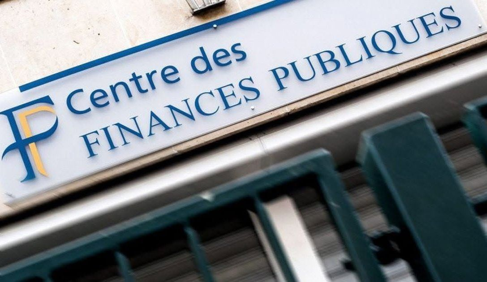

Washington answers Iran's control claim over Hormuz with hardware, not just sanctions, while the bond market flashed its own warning hours earlier.

Read the synthesis →
The carrier is the tell. Iran's Fars News ran Tehran's line that it now controls the Strait of Hormuz, the chokepoint through which a fifth of the world's oil moves, and Washington's answer, a second carrier group ordered to the Middle East per the Wall Street Journal, is not the low-key sanctions posture this column had settled on Monday. That read is broken. This is escalation with a hull number attached. Germany's cabinet approved sweeping new powers for its intelligence agencies the same week Berlin called its own posture a security revolution, a domestic hardening that lands differently against a Gulf buildup than it would alone. Underneath both sits the real number: the US sold 30 year bonds at the highest borrowing cost since 2001, a funding signal a Hong Kong treasury desk should weigh above either headline, because it sets what financing two simultaneous military postures actually costs. Lawmakers are separately demanding answers on the USS Abraham Lincoln after reports that sailors tried to jump overboard during its extended deployment, a readiness story sitting awkwardly beside the new carrier order. A compliance head reviewing Gulf shipping insurer exposure should treat this week's yield move, not the carrier, as the number that actually reprices risk. Watch whether the second carrier reaches the Gulf by week's end.